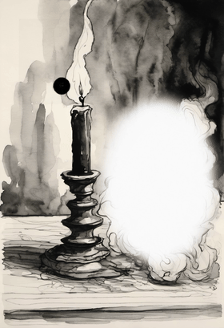
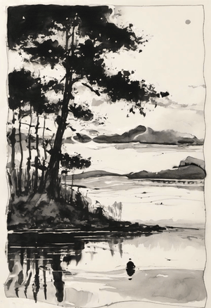
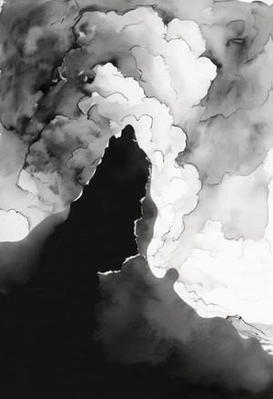
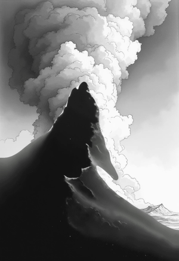

01The brief
Render subtle moving flames, time-lapse sky, smoke, dust and water in Blender and gen-AI, then stylize them as hand-drawn high-contrast black & white to match the BLUELINE vibe. The working shape: take an image, separate the elements, infill as needed, add motion to the moving parts, re-composite. An experimental process to learn what can give a single frame dramatic motion.
The locked look is the constraint: black chisel-tip marker + grey dry-brush on rough white cold-press paper, loose gestural lines — sumi-e / Vagabond / manga-ink. High contrast, lots of white space.
02The finding
Stylize once with AI, then move the ink with pure geometry. The drawing is inked a single time; a deterministic displacement field animates it into a seamless loop. The result is temporally rock-solid — zero boil — where a per-frame AI restyle flickers.
It is the literal form of the standing note — "manipulate the existing ink, slowed down" — and it rhymes with the M3 result that seed-lock beat per-step warp. The research backs it: the canonical method is Halperin et al.'s Endless Loops (SIGGRAPH 2021) — periodic displacement fields with temporal smoothing — and the failure everyone fights is per-frame diffusion flicker.
03Move the existing ink
The engine takes one pen-flow still, a feathered element mask, and a per-phenomenon displacement field, and renders a seamless loop by resampling the ink under that field. Every temporal term is a whole number of cycles, so frame N equals frame 0 by construction. Motion is masked to zero outside the element — the rest of the drawing holds perfectly still, no seam. Pure CPU, seconds per loop, free.
five elements, each warped from a single inked plate · motion confined by the mask, the rest static

red/cyan fringe = where the ink moves (frame 0 vs mid). zero fringe = perfectly static.
The base-anchor trick
For flame and smoke, a per-pixel weight that is 0 at the base of the mask and 1 at the top pins the source and frees the tips — the difference between "the whole flame slides" and "the flame licks."
04Blender sims, stylized to ink
For billowing smoke, scattering dust, or any medium the drawing lacks, warp has nothing to move. Headless Mantaflow bakes a sim and renders a grayscale-on-white substrate; a deterministic NPR pass turns it to marker-on-cold-press. The whole path works on Blender 5.1.2.

Gotchas worth keeping
- AgX crushes white→grey. Blender 5.x defaults to the AgX view transform, which renders "white paper" mid-grey and kills contrast. Set view_transform = "Standard".
- Slotted-action API. Action.fcurves is gone in 5.x — drive time-varying flow with a frame_change_pre handler, not keyframes.
- Rise is the craft. A discrete puff + an upward launch velocity + 110 frames gave a plume; continuous inflow barely rose. The medium renders faint — lift it in the NPR levels.
Honest read: for BLUELINE's wispy drawn elements the warp simply looks better and is free. Blender earns its place for the billow / composite cases — and there a genuinely beautiful plume is still a tuning pass away.
05Stylize once, not every frame
How do you get a sim into the locked look without it boiling? Two stylizers, head to head on the same Blender smoke: a deterministic NPR pass that re-uses one static procedural cold-press tooth every frame, versus per-frame SDXL img2img that redraws each frame.

same sim, two stylizers · NPR re-uses one paper tooth → stable · AI redraws every frame → boils ~10×
The number settles it: 0.15/255 frame-to-frame boil for deterministic NPR versus 1.50/255 for per-frame AI — and the AI figure is even flattered (it sampled sparse frames with more real motion between them). The lesson is the same one as the warp: stability comes from drawing the ink once, not redrawing it sixty times. AI makes the still; geometry makes the motion.
06The black line is the matte
The first masks were a real weakness — soft-edged bands ("bottom 50%") that smeared motion across object boundaries: ripple crept up the tree trunks, cloud drift bled into the ridge. That blur was a confession of not having the real edge.
In high-contrast ink, an object's edge already rides a black line — the artist did the segmentation with a brush. So the right cut is a hard cut snapped to the silhouette, not a soft feather. A sharp cut hidden inside a black stroke is invisible: black meets black. Seams are then hidden by occlusion, not feathering.
That opens the real architecture: a 2.5D paper stack — sheets of inked paper, cut sharp, stacked with air between them, each with its own subtle motion. The lineage is the multiplane camera (Disney, 1937), Lotte Reiniger cutting Prince Achmed out of literal black paper in 1926, and ukiyo-e, already a separate carved block per element. Each sheet gets its own field from the engine; depth order does the work the feather was failing at.
Ink-on-paper compositing is multiply
The recomposite reduces to one line: out = base × element. White paper (1) passes the base through; black ink (0) darkens. No alpha needed when the element sits on white. The tested caveat: white-paper infill only works on a white-ground plate — so author plates with white space where the motion will live, and "infill" is free.
07Separate, or generate
There are two ways to get the sheets. Route A · separate cuts a finished drawing along its black lines and infills behind. Route B · generate renders each sheet as its own pass, clean alpha by construction. Tested on the sky/ridge scene — the exact case where the band-mask bled.

A: cut the drawing (extract + infill) · B: generate each sheet separately
Route A's extraction needed a content-aware fix: a luminance threshold grabbed 63% of the frame (dark hill and dark cloud ink both read "dark"). The distinguishing feature is fill density — a hill is a solid filled mass, clouds are line work. Thresholding local dark-density kept the hill, dropped the clouds, and landed the cut on the silhouette. Naive Route B failed the opposite way: two independent generations don't cohere — they read as two drawings fighting.
| Route A · separate | Route B · generate | |
|---|---|---|
| Coherence (one picture) | free — it is one drawing | the work — passes drift |
| Clean alpha (the cut) | the work — extract + infill | free by construction |
| Works on an existing frame | yes | no — new frames only |
They are duals: A makes coherence free and the cut hard; B makes the cut free and coherence hard.
08Both routes, on ControlNet
Both weak spots were then hardened on the palace's proven RunPod ControlNet infra.
Route A · the infill upgrade
Route A's white-paper infill fails on a structured ground. On the water plate, SDXL inpaint (local, free, in ink) fills behind the extracted foreground with coherent water + far shore — so the trees become a static front sheet over independently-rippling water, instead of a white hole.


Route B · shared conditioning fixes the incoherence
The fix for Route B's drift: both layer passes condition on the same authored depth map + the same seed, so the sheets register as one scene. Run on the FLUX union ControlNet, then re-inked locally with SDXL — FLUX's ControlNet coherence + SDXL's ink.

naive B (two drawings fight) → B v2 FLUX depth-shared (one coherent scene) → re-inked


It cohered. The hill landed at 38–39% in every pass — Route A 38.4%, B-flux 39.2%, B-ink 38.7% — the shared depth placed it identically. Shared conditioning is what earns generate-as-layers its coherence. The tunable edge: at low re-ink denoise the ink reads wash-like rather than crisp line; a lineart ControlNet would sharpen it.
The RunPod recipe — captured
- ControlNet on the GPU needs the volume recipe: mount blueline-models (holds flux-union-pro), symlink it in, launch FLUX. A from-scratch SDXL-download pod boots but never exposes ComfyUI; the serverless endpoint has the union node but an empty model list.
- The proxy WAF 403s a bare user-agent — send a browser UA on the curl upload too; use -sS, not -s (which hides the error).
- Guaranteed teardown: cleanup runs even on render failure — verified 0 pods after every run. Total spend: ~$0.20.
09The decision map
10Conclusions
- Move the ink, don't redraw it. One AI still + deterministic geometry = a seamless, flicker-free loop. Proven across all five elements (boil 0.15 vs 1.50, seam 0.0).
- The black line is the matte. High contrast is a gift: the silhouette is already drawn, so the cut is a knife hidden in the ink, and occlusion — not feathering — hides every seam.
- The frame is a 2.5D paper stack. Sheets cut sharp, stacked with air, each with its own field and parallax. The motion engine is the per-sheet primitive.
- Two routes, both now tractable. Separate (have the frame): coherence free, cut + infill solved locally in ink. Generate (make the frame): clean alpha free, coherence solved by a shared authored control.
- Blender for the billow, warp for the drawn. The sim path is proven end-to-end; its art direction is the open craft lever.
- Build the system, not the sequence. A reusable bench — fields · warp · stylize · compose · layers · stack · pod — every run writing its params and metrics. It generalizes past this one track.
Open threads: sharpen Route B's ink with a lineart ControlNet; mask each generate-pass to its depth band for pure sheets; run a full four-sheet scene (sky · hills · water · trees) with per-sheet parallax.